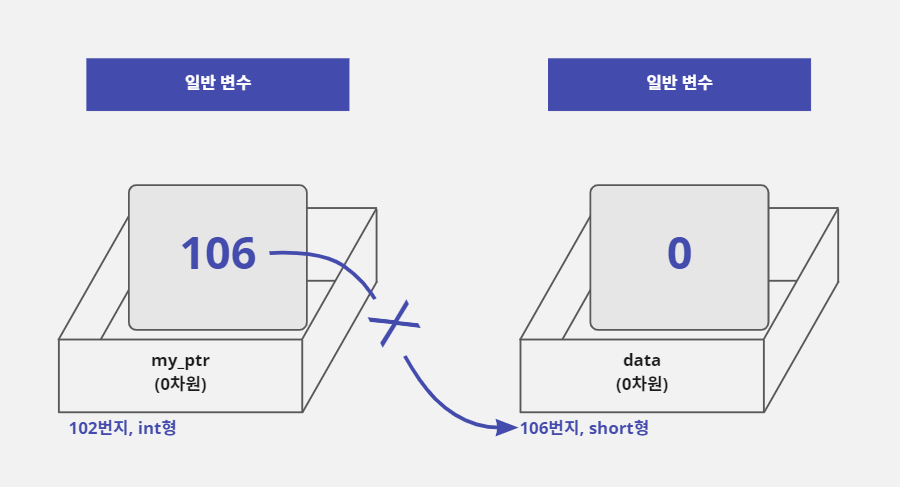
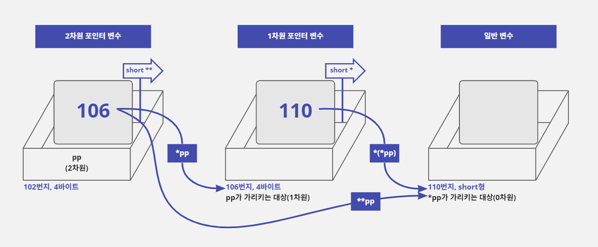
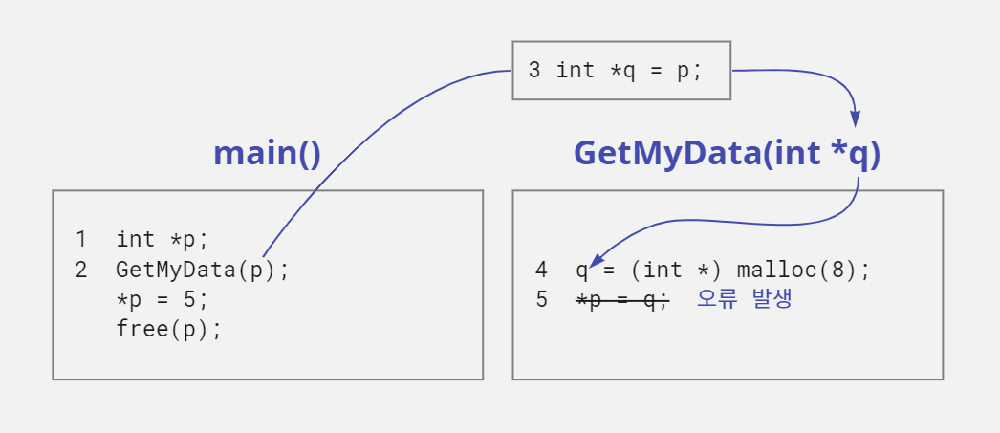
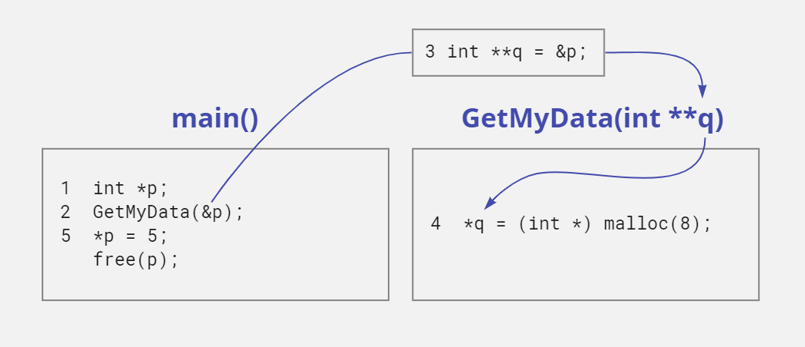
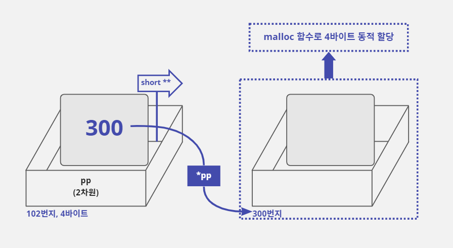
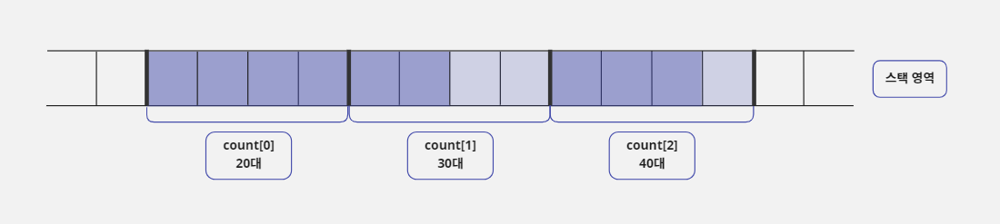
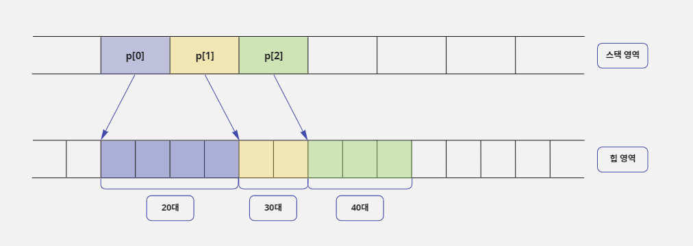

17. 다차원 포인터
- 포인터는 일반 변수를 가리킬 수도 있지만 또 다른 포인터를 가리킬 수도 있다.
- 이렇게 포인터가 포인터를 가리키는 것을 '다차원 포인터'라고 부른다.
- 다차원 포인터는 다차원 배열과 함께 자주 쓰인다.
- C 언어로 프로그래밍할 때 어떤 경우에 다차원 포인터를 사용하고, 어떻게 문법을 구성하는지 알아보자.
17-1. 다차원 포인터 개념
다차원 포인터란?
- '내'가 '길동이'라는 친구를 부를때 '친구야'라고 표현하는 상황을 상상해보자.
- '길동아'라고 부르는 것은 직접 표현을 사용하는 것이고, '친구야'라고 부르는 것은 간접 표현을 사용하는 것이다.
- 이 경우 '내'가 '길동이'를 가리키는 포인터가 된 것이다.
- '나의 친구의 친구'처럼 두 번 연속으로 간접 표현을 사용하는 것처럼 간접으로 여러번 가리키는 포인터를 '다차원 포인터'라고 부른다.
short *p, data = 5;
p = &data; // 포인터 변수 p는 data 변수의 주소 값을 기억함
- 차원은 '자신이 가리키는 대상'의 개수만큼 증가한다.
- 가리키는 대상이 없는 경우 즉, 대상 그 자체는 가리키는 대상이 없기 때문에 0차원이다.

- 위의 그림에서 메모리 상자의 앞면에 변수 이름과 차원을 표시했다.
- 그리고 상자 아래에 변수가 할당된 주소와 메모리의 크기(또는 자료형)을 표시했다.

다차원 포인터 정의하기
- 앞에서 배운 차원 개념과 포인터 문법을 연결해 보자.
- 포인터 변수를 선언할 때
*키워드를 한 개만 사용한 포인터를 1차원 포인터라고 이야기하며*키워드를 하나씩 더 사용할 때마다 차원이 하나씩 증가한다. - 그리고
*키워드를 두 개 이상 사용해서 선언한 포인터를 '다차원 포인터'라고 한다. - 포인터 변수를 선언할 때 사용하는
*키워드는 최대 7개(컴파일러마다 다름)까지 사용할 수 있다. - 그리고 포인터 변수를 선언할 때 사용한
*키워드의 개수만큼 포인터를 사용할 때*연산자를 사용할 수 있다. - 예를 들어
char *p;라고 선언하면 포인터 변수 자체를 의미하는p또는 포인터 변수가 가리키는 곳에 값을 저장하기 위한*p, 이렇게 두 가지 표현을 사용할 수 있다. - 따라서
char ***p3;라고*키워드를 3개 사용해서 선언하면p3,*p3,**p3또는***p3라는 네 가지 표현을 사용할 수 있다.
char *p1; // 1차원 포인터: p1, *p1
char **p2; // 2차원 포인터: p2, *p2, **p2
char ***p3; // 3차원 포인터: p3, *p3, **p3, ***p3
일반 변수의 한계와 다차원 포인터
- 주소 값을 저장할 수 있는 크기(4바이트)의 변수라면 포인터 변수가 아니더라도 주소를 저장할 수는 있다.
- 따라서 다음과 같이 4바이트 크기의 자료형인
int형으로my_ptr변수를 선언하고&연산자를 사용하여data변수의 주소 값을my_ptr변수에 저장할 수 있다.
short data = 0;
int my_ptr = (int) &data; // &data는 short *형식의 값을 가지기 때문에
// int형 변수인 my_ptr에 저장하기 위해서 (int)로 형 변환한다
// my_ptr는 4바이트 크기라서 정상적으로 주소를 저장한다
*my_ptr = 3; // 오류 발생: my_ptr는 포인터가 아니라서 *연산자를 사용할 수 없음

- 하지만
my_ptr변수는 포인터 변수가 아니기 때문에*(번지 지정)연산자를 사용할 수 없다. - 이것은
my_ptr변수에 저장된 주소로 이동하여 값을 대입하거나 읽을 수 없다는 뜻이다. - 그래서 일반 변수에 주소 값을 저장하지 않고
*연산자를 사용해서 포인터 변수에 주소 값을 저장하는 것이다. - 포인터 변수는 자신이 저장하고 있는 주소에 가서 값을 읽거나 쓸 수 있는 기능을 가지고 있기 때문이다.
- 정리하자면 일반 변수에도 주소 값을 저장할 수는 있지만, 자신이 저장하고 있는 주소에 가서 값을 읽거나 쓸 수 없기 때문에 의미가 없다.
- 이 개념을 잘 이해해야 이후에 배울 다차원 포인터 문법을 쉽게 이해할 수 있다.
17-2. 2차원 포인터
2차원 포인터의 선언과 사용
- 다차원 포인터 중 가장 자주 사용하는 것은 2차원 포인터이다.
- 2차원 포인터를 사용하면 2차원 배열을 다루는 게 훨씬 쉬워진다.
- 3차원 포인터부터는 2차원 포인터에서 단계가 하나씩 추가될 뿐 원리는 같다.
- 2차원 포인터는 다음과 같이
*키워드를 두 개 사용해서 선언한다.
short **pp;
- 그래서 포인터를 사용할 때
pp,*pp또는**pp처럼*연산자를 최대 2개까지 사용할 수 있다. - 다음 그림처럼 2차원 포인터 변수는
*pp를 사용하면 변수pp에 저장되어 있는 106번지로 이동해서 값을 읽거나 저장할 수 있다.

- 그리고
**pp를 사용하면 포인터 변수pp가 가리키는 대상(106번지)에 저장된 주소 값(110번지)을 대상으로 사용한다. - 그래서 110번지에 있는 값을 읽거나 저장할 수 있다.
2차원 포인터의 구성
- 앞의 그림을 보면
**pp라고 사용하면 두 번째 상자에 들어 있는 110을 주소로 사용해서 세 번째 상자를 가리킨다. - 그런데 만약 다음과 같이 두 번째 상자에 주소가 아닌 다른 의미의 값(3)이 저장되어 있다면 프로그램이 엉뚱한 메모리를 사용해서 오류가 발생한다.

- 즉 두 번째 상자에 저장되어 있는
3은data변수에 저장된 일반 숫자 값인데 이 값을 주소로 사용해서 3번지로 이동하여 값을 읽거나 저장하려고 하면 오류가 발생한다는 것이다.
short **pp;
int data = 3; // &data로 얻은 주소의 자료형이 int *이기 때문에
// 포인터 변수 pp와 자료형을 맞추기 위해서 short **로 형 변환한다
pp = (short **) &data;
- 이처럼 2차원 포인터는 세 번째 상자로 한 번 더 이동할 수 있기 때문에 두 번째 상자에 최종 대상(세 번째 상자)의 주소 값이 저장되어야 한다.
- 따라서 두 번째 상자는 다음과 같이 1차원 포인터 변수가 되어야 안정적인 구조가 된다.
short **pp, *p, data = 3;
p = &data; // data 변수의 주소 값이 포인터 변수 p에 저장됨
pp = &p; // 1차원 포인터 변수 p의 주소 값이 2차원 포인터 변수 pp에 저장됨
**pp = 5; // data 변수의 값이 3에서 5로 변경됨

- 위의 그림처럼 주소를 저장하려면 두 번째 상자와 세 번째 상자를 1차원 포인터 구조로 만드는 것이 좋다.
- 그리고 위와 같은 구조가 되면
data변수는**pp로도 값을 변경할 수 있고 1차원 포인터 변수p를 사용하여*p로도 값을 변경할 수 있다. - 결론적으로 다차원 포인터 구조는 오른쪽으로 하나씩 이동할 때마다 차원을 하나씩 줄여 주는 것이 좋은 구조이다.
- 위와 같은 구조를 유지하면 강제적인 형 변환을 할 필요도 없고 자연스럽게 코드를 구성할 수 있다.
- 2차원 포인터를 이용하여 일반 변수의 값을 수정하는 예제를 작성해보자.
/* 2차원 포인터를 사용하여 일반 변수의 값 대입하기 */
#include <stdio.h>
void main() {
short data = 3;
short *p = &data; // data 변수의 주소 값을 1차원 포인터 p에 저장함
short **pp = &p; // 1차원 포인터 p변수의 주소 값을 2차원 포인터 pp에 저장함
printf("[Before ] data : %d\n", data); // 3을 출력함
*p = 4; // 1차원 포인터 p를 사용하여 data 변수 값을 4로 수정함
printf("[Use *p ] data : %d\n", data);
**pp = 5; // 2차원 포인터 pp를 사용하여 data 변수 값을 5로 수정함
printf("[Use **pp] data : %d\n", data);
}
[Before ] data : 3
[Use *p ] data : 4
[Use **pp] data : 5
1차원 포인터 변수에 1차원 포인터 변수의 주소를 저장하면?
- 앞에서 2차원 포인터를 사용해 1차원 포인터의 주소 값을 저장하는 구조가 좋다고 했다.
- 그러면 1차원 포인터를 사용해서 1차원 포인터의 주소 갑을 저장하는 구조는 어떨까?

- 위 그림처럼 1차원 포인터 변수
q를 사용하여 1차원 포인터 변수p의 주소 값을 저장할 수는 있다. - 하지만 1차원 포인터 변수
q는*연산자를 한 개만 사용할 수 있기 때문에 포인터 변수p까지만 이동할 수 있고data변수까지는 이동할 수 없다. - 따라서 2차원 포인터를 사용하는 것과 구조는 비슷하지만 실용성은 떨어진다.
int *q, *p, data = 3;
p = &data; // 포인터 변수 p는 data 변수의 주소 값을 기억함
q = (int *) &p; // 포인터 변수 q는 포인터 변수 p의 주소 값을 기억함
- 또한 이렇게 사용하면 차원이 맞지 않는 문제가 발생한다.
- 일반 변수의 주소를
&연산자를 사용하여 계산하면 1차원 형식의 포인터 값으로 반환된다. - 1차원 포인터의 주소 값을
&연산자를 사용해서 계산하면 차원이 하나 증가하여 2차원 형식의 포인터 값으로 반환된다. - 따라서 차원을 맞추기 위해서
(int *)형식으로 형 변환을 해주어야 한다.
2차원 포인터가 가리키는 첫 대상이 일반 변수인 경우
- 2차원 포인터가 가리키는 첫 대상이 일반 변수이면 주소 값이 아닌 일반 숫자 값을 저장하고 있을 확률이 높다.
- 일반 숫자 값을 주소로 사용하면
**연산자를 사용할 때 문제가 발생할 수도 있다. - 그러므로 2차원 포인터가 가리키는 첫 대상은 1차원 포인터가 되는 게 일반적이다.
- 그러면 2차원 포인터의 첫 번째 대상으로 일반 변수를 사용하면서, 그 변수에 정상적인 주소 값을 저장해 사용하면 어떻게 될까?
- 다음과 같이 2차원 포인터 변수
pp가 일반 변수의 주소 값(106번지)을 저장하더라도, 그 일반 변수가 다른 변수의 주소 값(110번지)을 저장하고 있다면 구조적으로는 문제가 되지 않는다. - 다만 차원이 하나씩 감소하는 일반적인 구조가 아니기 때문에 각 변수 간에 자료형이 맞지 않아서 형 변환을 많이 해주어야 한다.

- 게다가 일반 변수
my_ptr는*연산자를 사용할 수 없기 때문에data변수의 주소 값을 저장하고 있더라도 이 주소로 이동할 수 없다. - 하지만 2차원 포인터 변수인
pp는**pp를 사용하여 두 번째 대상인data변수를 가리킬 때 첫 번째 대상에 저장된 주소 값을 읽어서data변수를 가리킬 수 있다. - 즉 첫 번째 대상인
my_ptr가 어떤 형식의 변수이든 상관없이 4바이트 크기의 메모리이고 주소 값만 정상적으로 저장되어 있다면 그 주소 값을 사용하여 두 번째 대상을 가리킬 수 있다는 뜻이다. - 따라서 2차원 포인터 변수인
pp는**pp = 5;라고 사용했을 때my_ptr변수가 1차원 포인터가 아니더라도 4바이트 크기의 메모리이고 정상적인 주소 값을 저장하고 있기 때문에 110번지로 한 번에 이동하여 값 5를 대입할 수 있다.
short **pp, data = 3;
int my_ptr = (int) &data; // &data는 short *형식의 값을 가지기 때문에
// int형 변수인 my_ptr에 저장하기 위해서 (int)로 형 변환한다
// my_ptr는 4바이트 크기라서 정상적으로 주소를 저장한다
pp = (short **) &my_ptr; // my_ptr의 주소 값이 2차원 포인터 변수 pp에 저장됨
// &my_ptr로 얻는 주소 값의 자료형이 int *이기 때문에
// 포인터 변수 pp와 자료형을 맞추기 위해서
// short **로 형 변환을 한다
**pp = 5; // data 변수의 값이 3에서 5로 변경됨
- 결론적으로 첫 번째 상자가 2차원 포인터 변수이고 두 번째 상자는 어떤 형식의 변수가 오든지 4바이트 크기이기만 하면 무조건 세 번째 상자로 이동하여 값을 변경할 수 있다.
2차원 포인터가 가리키는 대상을 동적으로 할당하기
- 1차원 포인터는 동적으로 할당한 메모리의 주소 값을 받아 사용할 수 있다.
- 따라서 2차원 포인터도 다음과 같이 두 번째 상자에 해당하는 4바이트 메모리를
malloc함수로 동적으로 할당해서 사용할 수 있다. - 2차원 포인터는 자신이 가리키는 첫 대상이 어떤 종류의 변수인지 상관없이 4바이트 크기의 주소 값만 저장되어 있으면 최종 대상을 사용할 수 있기 때문이다.
short **pp, data = 3;
pp = (short **) malloc(4); // 두 번째 상자로 사용할 4바이트 메모리를 할당하고
// 그 주소 값을 2차원 포인터 pp에 저장한다
*pp = &data; // data 변수의 주소 값을 두 번째 상자(동적으로 할당된 메모리)에 저장함
**pp = 5; // data 변수의 값이 3에서 5로 변경됨

- 결국 이 예시에서 동적으로 할당된 4바이트 메모리는 포인터가 아니라서
*(번지 지정)연산자를 사용할 수 없기 때문에 스스로는 아무것도 할 수 없다. - 하지만
**pp라고 사용할 때 이 4바이트 메모리에 저장된 주소 값을 사용하여 세 번째 상자로 이동하기 때문에 이 4바이트 메모리는 간접적으로 1차원 포인터처럼 사용된다. - 즉 2차원 포인터 기준으로 봤을 때 이 4바이트 메모리는
short *로 선언한 포인터처럼 사용되기 때문에malloc(4)로 적는 것보다 다음과 같이 적는 것이 코드의 의미를 더 분명하게 전달할 수 있다.
pp = (short **) malloc(sizeof(short *)); // short *는 포인터이기 때문에 크기가 4바이트임
- 결국 이 형식은
short *형식의 포인터를 동적으로 할당하여 그 주소 값을 2차원 포인터pp에 저장하는 형태이다. - 그래서 위와 같이 적으면 1차원 포인터 한 개를 동적 할당한다고 이야기한다.
- 마지막으로 다음 예제는 두 번째 상자와 세 번째 상자까지 동적 메모리 할당을 사용하여 2차원 포인터 구조를 구성한 것이다.
- 이렇게 구성하면 스택 공간에는 포인터 변수
pp만 할당되고pp에 할당 받은 동적 메모리(나머지 상자에 해당하는 메모리)는 힙에 할당된다.
/* malloc 함수를 사용하여 2차원 포인터 구조 만들기 */
#include <stdio.h>
#include <malloc.h>
void main() {
short **pp;
pp = (short **) malloc(sizeof(short *)); // 4바이트를 할당함. 두 번째 상자 만듦
*pp = (short *) malloc(sizeof(short)); // 2바이트를 할당함. 세 번째 상자 만듦
**pp = 10; // 2차원 포인터를 사용하여 세 번째 상자에 10을 대입함
printf("**pp : %d\n", **pp); // 10을 출력함
free(*pp); // 세 번째 상자에 해당하는 메모리 해제함
free(pp); // 두 번째 상자에 해당하는 메모리 해제함
}
**pp : 10
- 이 예제에서 동적으로 할당한 메모리를 해제하는 순서가 정말 중요하다.
- 왜냐하면 두 번째 상자가 세 번째 상자의 주소 값을 가지고 있기 때문에 두 번째 상자를 먼저 해제하면 세 번째 상자의 주소 값을 잃어버리기 때문이다.
- 그러면 세 번째 상자에 해당하는 메모리를 해제하지 못하게 되므로, 반드시 세 번째 상자의 메모리를 먼저 해제하고 두 번째 상자의 메모리를 해제해야 한다.
2차원 포인터가 가리키는 대상을 동적으로 할당하면 좋은 점
- 위의 예제에서는 2차원 포인터 개념을 설명하기 위해서 2차원 포인터가 가리키는 첫 번째 대상(두 번째 상자)을 4바이트(
short *)로 동적 메모리 할당하고 두 번째 대상(세 번째 상자)을 2바이트(short)로 동적 메모리 할당했다. - 즉 첫 번째 대상은 4바이트 1개이고 두 번째 대상은 2바이트 1개를 할당한 것이다.
- 하지만 꼭 이렇게 가리키는 대상을 1개로 구성해야 하는 것은 아니다.
short **pp = (short **) malloc(3 * sizeof(short *)); // 12바이트(3*4) 크기로 메모리가 할당됨
- 이 코드처럼 첫 번째 대상을 4바이트가 아닌 12바이트(4바이트 3개)로 할당해도 된다.
- 12바이트이면 4바이트 크기로 메모리를 나눠서 사용할 수 있기 때문에 총 세 개의 주소를 저장할 수 있다.
- 그리고 첫 번째 대상의 첫 번째 주소에 접근하고 싶으면 포인터의 주소 연산을 사용해서
*(pp + 0)이라고 써 주면 된다. - 그리고 첫 번째 대상의 두 번째 주소에 접근하고 싶으면
*(pp + 1)그리고 세 번째 주소에 접근하려면*(pp + 2)라고 쓰면 된다.

- 2차원 포인터
pp가 가리키는 두 번째 대상도 2바이트(short)가 아닌 4바이트로 할당해서short형식의 정수 값을 한 개가 아닌 두 개 저장할 수도 있다.
*pp = (short *) malloc(2 * sizeof(short)); // 4바이트(2*2) 크기로 메모리가 할당됨
- 위와 같이 4바이트가 할당되면 2바이트(
short)씩 나눠서 2개의 정수를 저장할 수 있다. - 첫 번째 정수 값을 저장하기 위해서는
*(*pp + 0)또는**pp라고 사용하면 되고 두 번째 정수 값을 저장하기 위해서는*(*pp + 1)이라고 사용하면 된다. - 이렇게 2차원 포인터가 가리키는 첫 번째 대상과 두 번째 대상에 값을 한 개 이상 저장할 수 있도록 구성하면, 2차원 배열과 비슷한 형식의 메모리를 구성할 수 있다.
- 2차원 배열을 사용하는 경우에는 행의 갯나 열의 개수가 변경되면 반드시 다시 컴파일을 해서 변경 사항을 반영해야 한다.
- 하지만 2차원 포인터와 동적 메모리 할당을 사용해서 2차원 메모리 구조를 만들면 행의 개수나 열의 개수가 변경되더라도 컴파일을 다시 하지 않아도 된다.
- 조건이 변할 때 마다 매번 다시 컴파일해야 하는 프로그램보다는 별다른 변경 없이 그대로 사용할 수 있는 프로그램이 당연히 더 좋을 것이다.
- 따라서 2차원 포인터와 동적 메모리 할당을 사용하여 2차원 데이터 구조를 만드는 것이 좋다.
17-3. 2차원 포인터와 함수의 매개변수
매개변수에 포인터 변수를 잘못 사용한 경우
- 프로그래밍을 하다 보면 중복된 코드를 줄이고 변화에 효과적으로 대처하기 위해서 함수를 만들어 사용하는 경우가 많다.
- 그런데 함수의 매개변수로 포인터를 사용하는 경우에 차원 개념을 잘못 적용하면 원하는 값을 제대로 반환 받지 못해 오류가 발생할 수 있다.
- 이런 종류의 오류는 컴파일할 때는 문제가 없지만 실행할 때 오류가 발생할 확률이 높다.
- 다음과 같이 8바이트의 메모리를 동적으로 할당하는
GetMyData함수를 만들고 이 함수를 호출하는 예제 코드를 구성해 보자. - 이 예제는 컴파일은 성공하지만 프로그램이 실행될 때 오류가 발생한다.
/* 8바이트의 동적 메모리를 할당하는 함수 만들기 */
#include <malloc.h>
void GetMyData(int *q) {
q = (int *) malloc(8); // 8바이트의 메모리를 동적 할당하여 포인터 q에 저장함
}
void main() {
int *p; // p는 초기화되지 않아서 쓰레기(유효하지 않은) 값을 저장함
GetMyData(p); // 함수를 호출하여 p에 8바이트 메모리를 할당함
*p = 5; // 오류 발생: 할당된 메모리의 첫 4바이트에 값 5를 넣음
free(p); // 동적으로 할당된 메모리를 해제함
}
Process finished with exit code -1073741819 (0xC0000005)
문제가 발생하는 이유
- 이 문제가 발생한 이유는
main함수의 포인터 변수p에서GetMyData함수의 포인터 변수q로 원하지 않는 주소 값이 전달되었기 때문이다. - 이 상황을 명령이 실행되는 순서대로 적어 보면 다음과 같다.

p는 초기화되지 않아서 쓰레기(유효하지 않은) 값을 저장함.GetMyData함수의 매개변수로p전달함.p에 저장된 주소 값을q에 대입함.p와q는 같은 주소 값(쓰레기 값)을 저장하고 있음.- 8바이트 동적 메모리 할당. 할당된 메모리의 주소 값은
q에 저장함. 결국q에는 새로 할당된 메모리의 주소가 저장되었을 뿐p포인터 변수에는 별다른 영향을 미치지 않음.p는 처음 가지고 있던 쓰레기 값을 그대로 가지고 있는 상황인데, 그 주소에5를 저장하려고 하면 원하지 않는 주소 값을 대입하는 것이기 때문에 오류 발생함.
- 앞의 코드를 보면 포인터 변수
p에는 실제 메모리 주소 값이 대입된 적이 없다. - 초기화되지 않은 쓰레기 값만 들어갔을 뿐이다.
- 그런데 이 포인터 변수를
*p = 5;라고 사용했으니 유효하지 않은 주소로 이동해서 값5를 대입하기 때문에 문제가 발생하는 것이다.
동적으로 할당된 주소 값을 포인터 변수에 대입하면 문제를 해결할 수 있을까?
- 먼저
malloc함수를 사용하여 8바이트 메모리를 할당하자. - 그리고 할당된 메모리의 주소 값은 포인터 변수
q에 저장하고,q가 저장하고 있는 주소 값을 포인터 변수p에 대입해 보자.

p는 초기화되지 않아서 쓰레기(유효하지 않은) 값을 저장함.GetMyData함수의 매개변수로p전달함.p에 저장된 주소 값을q에 대입.p와q는 같은 주소 값을 저장하고 있음.- 8바이트 동적 메모리 할당. 할당된 메모리의 주소 값은
q에 저장함. 결국q에는 새로 할당된 메모리의 주소가 저장되었을 뿐p포인터 변수에는 별다른 영향을 미치지 않음.GetMyData함수에 선언한 지역 변수q는 다른 함수에 선언한 지역 변수p를 사용할 수 없어 오류 발생함.
- 위와 같이 소스 코드를 수정하면 포인터 변수
p와q는 같은 주소 값을 저장하게 된다. - 결국 동적으로 할당된 8바이트 메모리의 주소 값을 둘 다 가지고 있는 셈이다.
- 하지만 이런 해결책은
GetMyData함수에 적용할 수 없다. - 왜냐하면
GetMyData함수에 선언한 지역 변수q는 다른 함수(main)에 선언한 지역 변수p에 값을 대입할 수 없어서p = q;라고 적으면 컴파일할 때 오류가 발생하기 때문이다. - 결국 이 방법으로도 문제를 해결할 수가 없다.
함수의 매개변수로 2차원 포인터 사용하기
main함수의 지역 변수p의 값을 변경하고 싶다면GetMyData함수에서 변수p의 주소 값을 전달 받아 처리해야 한다.- 다른 함수에 선언한 지역 변수의 '이름'은 사용할 수 없지만 '주소'는 사용할 수 있기 때문이다.
- 그런데 변수
p가 일반 변수가 아니고 1차원 포인터 변수이기 때문에,p변수의 주소 값을 전달 받는 변수q를 2차원 포인터로 선언해서 사용해야 한다.

p는 초기화되지 않아서 쓰레기(유효하지 않은) 값을 저장함.GetMyData함수의 매개변수로&p전달함.- 2차원 포인터
q에 1차원 포인터p의 주소 값을 저장함.- 8바이트 동적 메모리 할당. 할당된 메모리의 주소 값은
q가 가리키는 대상인 포인터 변수p에 저장함.p에 저장된 주소에 가서 값 5를 대입함.

- 위와 같이 2차원 포인터와 함수의 매개변수 개념을 사용하면 변수
p와q가 서로 다른 함수의 지역 변수라도main함수에 선언된 포인터 변수p의 주소 값을 변경할 수 있다. - 이제 이 개념을
GetMyData함수에 적용해 보자.
/* 2차원 포인터로 8바이트 동적 메모리를 할당하는 함수 만들기 */
#include <stdio.h>
#include <malloc.h>
void GetMyData(int **q) { // 포인터 변수 q는 p 변수의 주소 값을 저장함
// 할당된 메모리의 주소 값을 포인터 q가 가리키는 main 함수의 p에 저장함
*q = (int *) malloc(8);
}
void main() {
int *p; // p는 초기화되지 않아서 쓰레기(유효하지 않은) 값을 저장함
GetMyData(&p); // 포인터 변수 p의 주소 값을 매개변수로 전달함
*p = 5; // 할당된 메모리의 첫 4바이트에 값 5를 넣음
free(p); // 할당된 동적 메모리를 해제함
}
- 16장에서 동적 메모리 할당을 설명할 때
malloc함수와free함수를 한 쌍으로 사용하는 것이 좋다고 했는데 위의 예제에서는 분리해서 사용했다. - 그 이유는
GetMyData함수에서 동적으로 할당한 메모리의 주소 값을main함수의 포인터 변수p에 저장하여 사용하기 때문이다. - 따라서
GetMyData함수에서free함수를 사용해서 메모리를 해제하면GetMyData함수에서 할당한 메모리가 해제되어 버린다. - 즉
main함수의 포인터 변수p에 전달된 주소 값은 이미 해제된 메모리의 주소 값인 것이다. - 따라서
GetMyData함수에서 할당된 메모리를 해제하면,main함수에서 포인터 변수p를 사용하는 곳에서 문제가 발생하므로 주의해야 한다.
17-4. 2차원 포인터와 2차원 배열
여러 개의 1차원 포인터를 정적으로 할당하기
short *형식의 1차원 포인터가 100개 필요하다면 배열 문법을 사용하여 다음과 같이 선언할 수 있다.
short *p[100]; // short *형식의 1차원 포인터를 100개 선언함
- 배열의 요소가 100개이고 각 요소의 크기가 4바이트(포인터)이기 때문에 이 배열에 할당된 전체 메모리 크기는 400바이트이다
- 이렇게 선언하면
p[0]부터p[99]까지 총 100개의 포인터를 사용할 수 있다. - 하지만 위와 같은 표현에는 두 가지 비효율성이 있다.
- 첫 번째는 배열을 사용했기 때문에 컴파일할 때 변수
p의 메모리 크기가 400바이트로 고정되어 버린다. - 만약 포인터 200개를 사용하도록 수정해야 한다면 변수
p를p[100]대신p[200]으로 바꿔서 선언해야 한다. - 그리고 소스 코드를 변경했기 때문에 소스 파일을 다시 컴파일해야 하는 불편함이 있다.
- 두 번째는 메모리가 낭비될 수 있다.
- 변수
p는 100개의 포인터가 메모리에 할당되기 때문에 실제로 포인터를 5개만 사용하는 경우에 95개의 포인터를 저장할 수 있는 메모리가 낭비된다. - 결국 이 문제는 배열을 선언할 때 배열 크기가 반드시 상수로 적어야 하기 때문에 발생하는 것이다.
여러 개의 1차원 포인터를 동적 할당하기
- 17-2에서 2차원 포인터가 가리키는 첫 번째 대상에는 1차원 포인터의 주소 값을 저장해서 사용하는 것이 가장 좋지만, 4바이트 크기의 메모리에 주소 값을 저장해서 사용해도 된다고 하였다.
- 그래서
malloc함수로 4바이트 메모리를 할당하여 2차원 포인터에 저장하면 그 메모리를 1차원 포인터처럼 활용할 수 있기 때문에 다음과 같이 적을 수 있다. - 결국 아래 코드는 1차원 포인터 1개를 할당하는 내용이다.
short **pp;
pp = (short **) malloc(sizeof(short *)); // pp = (short **) malloc(4); 와 같은 표현

malloc함수의 매개변수에 동적으로 할당할 메모리의 크기를 적을 때는 상수 뿐만 아니라 변수를 사용할 수 있다.- 따라서 다음과 같이
short *형식의 1차원 포인터를 n개 할당할 수 있고 이렇게 할당된 메모리는*(pp + 0)부터*(pp + n - 1)까지 1차원 포인터 n개를 사용할 수 있다.
int n;
short **pp;
scanf("%d", &n); // 사용할 1차원 포인터의 개수를 사용자에게 받음
pp = (short **) malloc(sizeof(short *) * n);
// malloc 함수의 매개변수로 short *형식의
// 1차원 포인터 n개를 할당합니다

- 이렇게 2차원 포인터와
malloc함수를 사용하면 배열을 사용하는 것보다 코드는 좀 더 복잡해지지만 프로그램 실행 중에 1차원 포인터의 개수가 바뀌어도 소스 파일을 다시 컴파일할 필요가 없다. - 그리고 사용자가 메모리를 사용하고 싶은 크기만큼 선택할 수 있기 때문에 배열을 사용하는 것보다 메모리 효율성이 좋다.
2차원 배열과 동적 메모리 할당
- 2차원 배열과 같은 용도로 사용할 수 있는 메모리를 동적으로 할당하는 방법을 살펴보자.
- 어떤 회사에서 직원들의 체력을 테스트한 결과를 저장하는 프로그램을 만들어 볼 것이다.
- 이 회사의 연령별 인원수는 20대가 4명, 30대 2명, 40대 3명이다.
- 1분간 윗몸 일으키기를 하고, 이 횟수를 연령별로 저장하는 데 필요한 메모리는 어떻게 할당하는 것이 가장 효과적일까?
2차원 배열로 메모리를 할당하는 방법
- 먼저 1명이 1분 동안 수행한 윗몸 일으키기 횟수를 저장하기 위한 자료형(메모리 크기)을 결정해야 한다.
- 이 횟수는 정수 값이고 음수가 나올 수 없으며 200개를 넘을 가능성도 없다.
- 따라서 0~200 사이의 값을 저장하면 되기 때문에
unsigned char자료형(0~255)으로도 충분히 데이터를 저장할 수 있다. - 어떤 배열 구조를 사용할지 정해보자.
- 연령별 그룹이 2그룹이고 각 그룹별로 2명에서 4명까지 포함될 수 있다.
- 따라서 2차원 배열 구조가 효율적일 것이다.
- 2차원 배열을 사용하려면 그룹별 크기가 같아야 하므로 최대 인원수인 4명으로 배열의 크기를 정해야 한다.
- 이 내용을 종합해서 2차원 배열을 변수로 선언해 보면 다음과 같다.
unsigned char count[3][4]; // 3개의 그룹에 최대 4명의 사람을 관리함

- 이렇게 선언한 배열에 직원들의 윗몸 일으키기 횟수를 대입해 보자.
count[0][1] = 49; // 20대 연령의 두 번째 사람
count[1][0] = 45; // 30대 연령의 첫 번째 사람
count[2][2] = 42; // 40대 연령의 세 번째 사람
/* 2차원 배열로 연령별 윗몸 일으키기 횟수 관리하기 */
#include <stdio.h>
void main() {
// 연령별 인원수. 20대 4명, 30대 2명, 40대 3명
unsigned char limit_table[3] = {4, 2, 3};
// 연령별 윗몸 일으키기 횟수를 저장할 배열
unsigned char count[3][4];
int age, member, temp, sum;
// 연령별로 윗몸 일으키기 횟수를 입력 받음
for (age = 0; age < 3; age++) {
// '각 연령의 윗몸 일으키기 횟수'라고 출력함
printf("\n%d0대 연령의 윗몸 일으키기 횟수\n", age + 2);
// 해당 연령에 소속된 사람들을 순서대로 입력 받음
for (member = 0; member < limit_table[age]; member++) {
// '1th :, 2th :, ...'라고 출력함
printf("%dth :", member + 1);
// 윗몸 일으키기 횟수를 정수로 입력 받음
scanf("%d", &temp);
// scanf로 unsigned char 변수에 직접 정수를 받을 수 없어서 temp 변수에
// 정수로 입력 받은 후에 count 배열 요소에 저장한다
count[age][member] = (unsigned char) temp;
}
}
printf("\n\n연령별 평균 윗몸 일으키기 횟수\n");
// 연령별로 입력된 횟수를 합산하여 평균 값을 출력함
for (age = 0; age < 3; age++) {
sum = 0;
// '20대 :, 30대 :, 40대 :'라고 출력함
printf("%d0대 : ", age + 2);
// 해당 연령에 소속된 사람들의 횟수를 합산함
for (member = 0; member < limit_table[age]; member++) {
sum = sum + count[age][member];
}
// 합산 값을 인원수로 나누어서 평균을 냄
printf("%5.2f\n", (double) sum / limit_table[age]);
}
}
20대 연령의 윗몸 일으키기 횟수
1th :57
2th :52
3th :55
4th :50
30대 연령의 윗몸 일으키기 횟수
1th :48
2th :41
40대 연령의 윗몸 일으키기 횟수
1th :35
2th :52
3th :43
연령별 평균 윗몸 일으키기 횟수
20대 : 53.50
30대 : 44.50
40대 : 43.33
조건 추가 1: 각 연령층에 포함된 인원수가 변한다면?
- 회사에 직원들이 변동하여 각 연령층에 포함된 인원수에 변화가 생길 수 있다는 조건을 추가해 보자.
- 이 조건을 만족하려면
limit_table에 고정되어 있는 4, 2, 3값을 정해 놓지 않고 프로그램이 시작할 때 사용자에게 입력 받으면 된다. - 하지만
count배열에서 고려한 최대 인원수가 4명이기 때문에 사용자가 입력한 인원수가 4명보다 많아지면count배열에 문제가 생긴다. - 배열은 요소의 개수를 상수로만 입력받을 수 있기 때문에 최대 인원수를 4보다 큰 숫자로 변경하려면 소스 코드에서
count배열의 크기를 직접 변경해야 한다. - 이렇게 되면 소스 코드 또한 다시 컴파일해야 한다.
포인터 배열 사용하여 메모리 할당하기
- 이 문제를 해결하려면 사용자가 입력한 인원수만큼 메모리를 동적으로 할당해야 한다.
- 연령층에는 변화가 없기 때문에 다음과 같이 포인터 배열을 사용하여 3개의 포인터를 선언한다.
- 그리고 각 포인터에
malloc함수를 사용하여 사용자가 입력한 연령별 인원수로 메모리를 동적으로 할당하면 된다.
unsigned char limit_table[3] = {4, 2, 3}; // 사용자가 연령층별로 입력한 인원수
unsigned char *p[3]; // 1차원 포인터 3개를 선언함
int age;
// 연령층별로 입력된 인원수만큼 동적으로 메모리를 할당함
for (age = 0; age < 3; age++) {
p[age] = (unsigned char *) malloc(limit_table[age]);
}
...
// 프로그램이 끝나기 전에 동적으로 할당된 메모리를 정리함
for (age = 0; age < 3; age++) free(p[age]);

#include <stdio.h>
#include <malloc.h>
void main() {
// 연령별 인원수를 저장할 배열 - 사용자에게 입력 받음
unsigned char limit_table[3];
// 연령별 윗몸 일으키기 횟수를 저장할 배열
unsigned char *p[3];
int age, member, temp, sum;
// 연령별로 윗몸 일으키기 횟수를 입력 받음
for (age = 0; age < 3; age++) {
// '20대 연령의 윗몸 일으키기 횟수'라고 출력하기 위해서 설정함
printf("\n%d0대 연령의 윗몸 일으키기 횟수\n", age + 2);
printf("이 연령대는 몇 명입니까 :");
// 해당 연령에 소속된 인원수를 입력 받음
scanf("%d", &temp);
// scanf로 unsigned char 변수에 직접 정수를 받을 수 없어서
// temp변수에 정수로 입력 받은 후 limit_table 배열에 넣어 줍니다
limit_table[age] = (unsigned char) temp;
// 입력 받은 인원수만큼 메모리를 할당함
p[age] = (unsigned char *) malloc(limit_table[age]);
// 해당 연령에 소속된 사람들을 순서대로 입력 받음
for (member = 0; member < limit_table[age]; member++) {
// '1th :, 2th :, ...'라고 출력하기 위해서 설정함
printf("%dth :", member + 1);
// 윗몸 일으키기 횟수를 정수로 입력 받음
scanf("%d", &temp);
// scanf로 unsigned char 변수에 직접 정수를 받을 수 없어서
// temp 변수에 정수로 입력 받은 후에 *(p[age] + member)에 저장합니다
*(p[age] + member) = (unsigned char) temp;
}
}
printf("\n\n연령별 평균 윗몸 일으키기 횟수\n");
// 연령별로 입력된 횟수를 합산하여 평균 값을 출력함
for (age = 0; age < 3; age++) {
sum = 0;
// '20대 :, 30대 :, 40대 :'라고 출력하기 위해 설정함
printf("%d0대 : ", age + 2);
// 해당 연령에 소속된 사람들의 횟수를 합산함
for (member = 0; member < limit_table[age]; member++) {
sum = sum + *(p[age] + member);
}
// 합산 값을 인원수로 나누어서 평균을 냄
printf("%5.2f\n", (double) sum / limit_table[age]);
// 이 연령에 할당했던 동적 메모리를 해제함
free(p[age]);
}
}
20대 연령의 윗몸 일으키기 횟수
이 연령대는 몇 명입니까 :4
1th :57
2th :61
3th :53
4th :59
30대 연령의 윗몸 일으키기 횟수
이 연령대는 몇 명입니까 :2
1th :49
2th :51
40대 연령의 윗몸 일으키기 횟수
이 연령대는 몇 명입니까 :3
1th :45
2th :37
3th :51
연령별 평균 윗몸 일으키기 횟수
20대 : 57.50
30대 : 50.00
40대 : 44.33
조건 추가 2: 직원의 연령층이 다양해진다면?
- 이렇게 되면 연령별 윗몸 일으키기 횟수를 저장할 포인터가 3개에서 4개 또는 5개로 변경될 수 있다는 뜻이 된다.
- 그리고 이 정보도 사용자에게 입력 받아서 처리할 수 있어야 하므로 연령층의 개수도 변수로 선언해서 사용해야 한다.
- 따라서 포인터 개수를 고정해서 만드는 포인터 배열은 이제 더 이상 사용할 수 없다.
2차원 포인터를 사용하여 2차원 데이터 형식 만들기
unsigned char *p_limit_table; // 사용자가 연령층별로 입력한 인원수를 저장할 포인터
unsigned char **p; // 1차원 포인터를 n개 선언할 2차원 포인터
int age_step = 3; // 연령대의 개수, 10대, 20대, 30대
int age;
// 연령층별 인원수를 저장할 메모리를 동적으로 할당함
p_limit_table = (unsigned char *) malloc(age_step);
p_limit_table[0] = 4; // 20대 4명
p_limit_table[1] = 2; // 30대 2명
p_limit_table[2] = 3; // 40대 3명
// 연령층별로 윗몸 일으키기 횟수를 저장할 포인터를 연령층 개수만큼 만듦
p = (unsigned char **) malloc(sizeof(unsigned char *) * age_step);
// 연령층별로 입력된 인원수만큼 동적으로 메모리를 할당함
for (age = 0; age < age_step; age++) {
*(p + age) = (unsigned char *) malloc(*(p_limit_table + age));
}
// 프로그램이 끝나기 전에 동적 할당된 메모리를 정리함
for (age = 0; age < age_step; age++) free(*(p + age));
free(p); // 동적 할당된 1차원 포인터 메모리를 해제함
free(p_limit_table); // 연령별 인원수를 저장하기 위해 만든 메모리를 해제함

- 연령층의 개수가 사용자의 입력에 따라 달라질 수 있도록 만들어야 하기 때문에 연령층의 개수를 저장할
age_step변수를 추가했다. - 그리고 연령층별 인원수를 관리하던
p_limit_table배열 크기는 더 이상 3(20대, 30대, 40대)으로 고정할 수 없기 때문에age_step변수를malloc함수에 사용하여 동적으로 메모리를 할당하도록 변경했다. - 그리고 2차원 포인터
p도 연령층의 개수에 따라 만들어지는 1차원 포인터의 개수가 달라지기 때문에age_step변수를malloc함수에 사용하여 동적으로 메모리를 할당하도록 변경했다. - 이와 같이 메모리를 구성하면 첫 예제에서
unsigned char count[3][4];라고 선언한 2차원 배열 구조와 같은 용도로 사용할 수 있도록 2차원 포인터로 메모리를 할당한 것이다. - 이렇게 2차원 포인터를 사용하면 소스 코드는 좀 복잡해지더라도 프로그램이 훨씬 유연해진다.
/* 2차원 포인터로 연령별 윗몸 일으키기 횟수 관리하기 */
#include <stdio.h>
#include <malloc.h>
void main() {
// 연령별 인원수를 저장할 포인터 - 사용자에게 입력 받음
unsigned char *p_limit_table;
// 연령별 윗몸 일으키기 횟수를 저장할 2차원 포인터
unsigned char **p;
int age, age_step, member, temp, sum;
printf("20대부터 시작해서 연령층이 몇 개인가요 :");
scanf("%d", &age_step);
// 연령별 인원수를 저장할 메모리를 만듦
p_limit_table = (unsigned char *) malloc(age_step);
p = (unsigned char **) malloc(sizeof(unsigned char *) * age_step);
// 연령별로 윗몸 일으키기 횟수를 입력 받음
for (age = 0; age < age_step; age++) {
// '각 연령의 윗몸 일으키기 횟수'라고 출력함
printf("\n%d0대 연령의 윗몸 일으키기 횟수\n", age + 2);
printf("이 연령대는 몇 명입니까? :");
// 해당 연령에 소속된 인원수를 입력 받음
scanf("%d", &temp);
// scanf로 unsigned char 변수에 직접 정수를 받을 수 없어서 temp변수에 정수로 입력 받은 후에
// p_limit_table이 가리키는 메모리에 넣어 줍니다
*(p_limit_table + age) = (unsigned char) temp;
// 입력 받은 인원수만큼 메모리를 할당함
*(p + age) = (unsigned char *) malloc(*(p_limit_table + age));
// 해당 연령에 소속된 직원들을 순서대로 입력 받음
for (member = 0; member < *(p_limit_table + age); member++) {
// '1th :, 2th :, ...'라고 출력함
printf("%dth :", member + 1);
// 윗몸 일으키기 횟수를 정수로 입력 받음
scanf("%d", &temp);
// scanf로 unsigned char 변수에 직접 정수를 받을 수 없어서 temp변수에 정수로 입력 받은 후에
// p가 가리키는 메모리에 넣어 줍니다
*(*(p + age) + member) = (unsigned char) temp;
}
}
printf("\n\n연령별 평균 윗몸 일으키기 횟수\n");
// 연령별로 입력된 횟수를 합산하여 평균 값을 출력함
for (age = 0; age < age_step; age++) {
sum = 0;
// '20대 :, 30대 :, 40대 :'라고 출력함
printf("%d대 : ", age + 2);
// 해당 연령에 소속된 사람들의 횟수를 합산함
for (member = 0; member < *(p_limit_table + age);
member++) {
sum = sum + *(*(p + age) + member);
}
// 합산 값을 인원수로 나누어서 평균을 냄
printf("%5.2f\n", (double) sum / *(p_limit_table + age));
// 이 연령에 할당했던 동적 메모리를 해제함
free(*(p + age));
}
// 윗몸 일으키기 횟수를 저장하기 위해서 구성했던 메모리를 해제함
free(p);
// 연령별 인원수를 기억하기 위해서 사용했던 메모리를 해제함
free(p_limit_table);
}
20대부터 시작해서 연령층이 몇 개인가요 :3
20대 연령의 윗몸 일으키기 횟수
이 연령대는 몇 명입니까? :4
1th :55
2th :51
3th :63
4th :59
30대 연령의 윗몸 일으키기 횟수
이 연령대는 몇 명입니까? :2
1th :43
2th :40
40대 연령의 윗몸 일으키기 횟수
이 연령대는 몇 명입니까? :3
1th :41
2th :35
3th :38
연령별 평균 윗몸 일으키기 횟수
2대 : 57.00
3대 : 41.50
4대 : 38.00
- 많은 프로그래머들이 2차원 포인터의 동적 할당 구조를 이해하는 것이 어려워서 사용하지 못하고 포기한다고 한다.
- 하지만 2차원 배열이나 포인터 배열을 사용하는 것보다 2차원 포인터를 이해하고 사용하면 프로그램을 훨씬 유연하게 만들 수 있으니 꼭 이해하고 넘어가자.